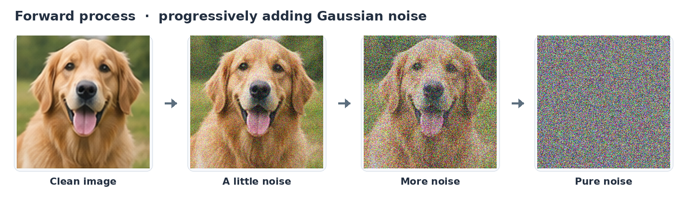
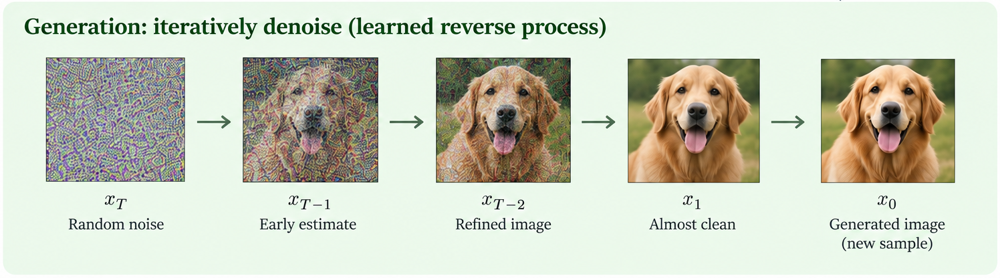

Introduction
If you are reading this post, chances are the recent hype and excitement around continuous diffusion language models (CDLMs), and diffusion language models in general, have caught your fancy. If that's the case, welcome, welcome! It's always so exciting to see new folks interested in this field.
When I first started discussing CDLMs with fellow researchers, I found it harder than usual to get on the same page. Even seemingly simple claims could be surprisingly confusing. Some of that confusion is understandable in a fast-moving field. Some of it, I suspect, comes from marketing getting a little carried away. Either way, I hope this post saves you from some of the confusion I went through and makes your own journey a little more comfortable.
From autoregression to diffusion
Before we get into diffusion, let's take a step back and look at how most language models generate text. In an industry constantly in flux, GPT-style Transformers are still king. They follow a familiar autoregressive recipe, predicting the next token, appending it to the sequence, and repeating the process. This approach forms the foundation of most leading language models today. But heavy hangs the head that wears the crown. For all its success, this recipe has its limitations, prompting researchers to explore other ways to generate text.
One particularly promising direction is diffusion, which offers another way to organize generation. During training, we corrupt examples of real data and teach a model to reverse that corruption. To generate something new, we start from noise and repeatedly apply the learned model to refine it. Diffusion models have already proven themselves in the vision-domain, and the hope is that this success will transfer.
For language, there are two broad approaches. Discrete diffusion language models (DDLMs) corrupt sequences of categorical tokens, often by replacing tokens with a special mask symbol. Continuous diffusion language models (CDLMs) instead corrupt continuous representations of text, typically by adding Gaussian noise to token embeddings. Generation then refines those noisy representations into something that can be decoded back into tokens.
In this post, we'll focus on continuous diffusion language models. CDLMs are often associated with Transformer architectures, bidirectional attention, parallel generation, and promises of faster inference, but how these ideas fit together isn't always clear. We'll start with a quick diffusion primer, then unpack what defines a CDLM, which features are simply design choices, and how parallel generation looks in practice.
A quick primer on diffusion
Before we get into the weeds, let's briefly look at how diffusion models work. Readers already familiar with the basics should feel free to skip this section.
Images provide a natural starting point. Autoregressive Transformers may dominate language modeling, but diffusion models have been the big dog in image generation.
Imagine taking a photograph and gradually adding random noise. At first, the image remains recognizable. As more noise is introduced, its details become harder to see until little remains but noise. This is the forward process, a predefined procedure for gradually corrupting data. Mathematically, a noisy image can be expressed as
where is the noisy image at stage , is the original image, and is sampled Gaussian noise. The coefficients and control how much of the original image and noise are mixed together.

Now, if we can learn to reverse this process, then voilà, we can generate new images from noise.
One common way to learn the reverse process is to train a neural network, called the denoiser, to predict the noise added to an image. We give it the noisy image and its noise level , and ask it to estimate the noise:
Because we added the noise ourselves, we know what the network should try to predict. Training across many images and noise levels teaches it to guide the reverse process.
Once the network is trained, we can start with random noise. We use its prediction to take a denoising step, feed the result back in, and repeat. Little by little, an image takes shape. This is the reverse process, illustrated below. We're generating a new image here, not recovering the original photograph.

Image diffusion models have traditionally used U-Nets. But diffusion itself is not a neural network architecture. It describes a generative process, while the network used to carry it out is a separate design choice. We'll return to this distinction in Section 4, since it is particularly relevant for language models.
The same principle can be applied to language. But there's a catch. Tokens aren't pixels, so what exactly are we supposed to add noise to?
Where does the diffusion actually happen?
For images, adding Gaussian noise gives us a natural way to gradually destroy information. With language, we first have to decide what to corrupt.
Language models represent text using categorical tokens, whose numerical IDs are essentially arbitrary labels. If a tokenizer assigns two tokens IDs of 100 and 101, that doesn't mean they are linguistically closer than tokens with IDs 100 and 20,000. Simply adding Gaussian noise to these IDs wouldn't give us a meaningful way to gradually corrupt text.
There are two broad approaches to this problem.
Discrete diffusion works directly with categorical tokens. In its most familiar form, masked diffusion, tokens are gradually replaced with a special [MASK] symbol. Generation reverses this process by predicting and revealing the missing tokens. Masking isn't the only option, though. Some models replace tokens with randomly chosen vocabulary entries instead. The key point is that the state being corrupted remains a sequence of discrete tokens.
Continuous diffusion takes a different approach. Rather than applying “noise” directly to discrete tokens, we typically represent each token as a vector of numbers, called an embedding. We can then add Gaussian noise to these vectors much like we did with images:
where represents the embeddings of a token sequence , and is its noisy representation. During generation, the model gradually denoises these vectors until they can be decoded back into tokens. We'll explore the mathematics in greater detail in a later post.
Here is a simplified comparison of the two corruption processes.
| Masked discrete diffusion | Continuous diffusion |
|---|---|
New York | Token embeddings |
[MASK] York | Partially noisy embeddings |
[MASK] [MASK] | Gaussian noise |
Now, here's an important subtlety that's easy to miss. Every conventional Transformer already operates on continuous representations internally. GPT-style Transformers turn their input tokens into continuous embeddings. Discrete diffusion models do much the same. Using continuous vectors alone is NOT what makes a model a CDLM.
The key difference is what gets updated during generation. In discrete diffusion, the network's predictions are used to update a sequence of discrete tokens and masks. In continuous diffusion, the noisy vectors themselves are updated until they can be decoded into text. A CDLM denoises continuous vectors instead of discrete tokens. Of course, this doesn't mean they are completely continuous. Their final outputs are still tokens.
You may have noticed that I refer to “noise” when talking about discrete diffusion. Flipping tokens at random is adding noise, but in the same way that the Dirac delta function is a function. All functions are equal, but some functions are more equal than others.
I personally suspect that evolving through a continuous space gives CDLMs a real advantage in expressivity, particularly when generating multiple dependent tokens together. We'll return to this when we look at how tokens are generated together.
Under the hood, isn't it still a Transformer?
By now, you may have noticed the deep, dark secret. Under the hood, many diffusion language models are still Transformers! It's surprisingly common to see diffusion and Transformers discussed as though they were competing architectures, but they aren't describing the same thing. Recall the denoising network from our image diffusion example. In image diffusion, this network has traditionally been a U-Net, while in language diffusion, it's often a Transformer. Diffusion describes the generative process, while the Transformer is the network used to guide it.
Part of the confusion comes from how closely we've come to associate the Transformer with the GPT recipe. GPT combines the Transformer architecture with causal attention and training to predict the next token. It generates text one token at a time. Diffusion language models can keep much of the same architecture while giving it a different job. A masked DDLM might use the network to predict missing tokens, while a CDLM might use it to denoise continuous representations. Instead of immediately choosing the next token, a diffusion model typically uses repeated predictions to refine its tokens or noisy vectors.
Bidirectional attention and block-autoregressive generation
This brings us to another characteristic commonly associated with diffusion language models, bidirectional attention. When denoising several positions together, why not let them exchange information? Unlike the causal attention used in GPT-style Transformers, bidirectional attention lets each position attend to positions on both its left and right. Of course, this doesn't mean the model can peek at the actual future text. It only has the current tokens, masks, or noisy vectors to work with.
The idea itself is nothing new. BERT was already using bidirectional attention to predict masked tokens long before diffusion language models became popular. And while bidirectional attention is a natural fit for denoising several positions together, it isn't a requirement for CDLMs. In principle, we could even use causal attention and denoise one token at a time before moving to the next. To me, though, that looks more like an ablation experiment than something you'd actually deploy.
We also don't have to denoise an entire sequence at once. A common approach is block-autoregressive generation, where we divide the output into smaller blocks and generate them one after another. Within each block, attention can remain bidirectional, allowing the tokens to be refined together. Each new block uses the completed blocks as context, so generation across blocks is autoregressive.
This makes longer outputs more practical. The model can often save and reuse computation from completed blocks as it generates the next ones.
Autoregressive
One token at a timeWhole-sequence
diffusion
All positions, several stepsBlock diffusion
One block at a timeBoth DDLMs and CDLMs can use these generation strategies. They describe how generation is organized, while the discrete–continuous distinction concerns what is being denoised. That brings us to another common misunderstanding, and perhaps the hardest one to wrap our heads around. Denoising several tokens together doesn't mean generating them all in a single step.
Predicting many tokens is not the same as generating many tokens
Now this is where we separate marketing from reality. Diffusion language models are often described as being able to generate hundreds of tokens “at once.” That sounds impressive, but what exactly does “at once” mean?
The key distinction is between predicting, updating, and finalizing tokens. By finalizing, I mean committing to the tokens that will actually appear in the output. A model can predict many positions in a single forward pass without finalizing any of them. A masked DDLM, for example, might predict all 100 masked positions but reveal only ten before making another pass. A CDLM might instead update 100 noisy token representations together, refining them over ten passes before converting them into discrete tokens.
So yes, diffusion models can work on many positions in parallel and produce an entire block of tokens together. But that doesn't mean the whole block was generated in a single forward pass. In our CDLM example, each pass updates all 100 token representations at once, but we still need multiple passes to finish generating the block. Parallel token updates and one-step generation are not the same thing.
And even if we could generate a hundred tokens in a single pass, there's another question. How do we make sure those tokens make sense together?
The interesting part isn't just parallelism. It's dependence.
Now we get to what I find particularly interesting about CDLMs. Generating many tokens at once sounds great, but how do we make sure those tokens actually make sense together? Continuous diffusion offers a particularly elegant way of addressing this.
Let's say we want a model to complete the sentence:
I live in ___ ___.
Imagine that the two equally likely completions are New York and Hong Kong. We want the model to choose one of these cities, not something like New Kong or Hong York.
An autoregressive model handles this quite naturally. It chooses the first token, then conditions the second on that choice. If it chooses New, it knows to follow with York. But what if we want to generate both tokens simultaneously? If we sample them independently, the first position has a 50% chance of being New or Hong, while the second has a 50% chance of being York or Kong. Half of our combinations mix up the two cities, even though the probabilities at each individual position are correct.
The problem is that getting the probabilities right for each token doesn't mean getting their combinations right. Mathematically, sampling two tokens independently given the current context or denoising state gives us
This is sometimes called the factorization problem. Bidirectional attention alone doesn't solve it. Both positions can use information from the whole sequence, but if we then draw each token independently, we can still end up with mismatched choices.
In many masked DDLMs, tokens revealed in the same step are sampled independently given the current sequence. Later steps can build on those choices. Once New has been chosen, for example, the next step can use that information to predict York. This allows them to capture dependencies over time. The challenge comes when we want to generate many dependent tokens in very few steps.
CDLMs offer another way to build these dependencies. A CDLM starts with noisy continuous vectors and gradually refines them together. The denoising network can use information from all positions, allowing their representations to influence one another before any final token decisions are made.
What matters here is what the model carries from one step to the next. In a standard masked DDLM, each position is either masked or represented by a discrete token. A CDLM instead carries a continuous vector from one denoising step to the next. That vector can change gradually and influence the other positions without first becoming a token. In our example, the two representations can work toward a consistent city name while both final token choices remain open.
Even if the initial noise at each position was sampled independently, the final tokens don't need to be independent. The model transforms those noisy vectors together, so the same initial randomness can influence several final token choices. Independent starting noise can become a coordinated output.
Discrete models can coordinate token choices too. Some use samplers that choose related tokens together, instead of drawing each one independently. The appeal of continuous diffusion is that it can build this coordination through gradual changes to the vectors themselves. How many steps it needs to do that well is a separate question.
For me, the real promise of CDLMs isn't simply generating more tokens in parallel. It's generating dependent tokens together, without having to make every decision one by one.
So what actually makes a model a CDLM?
With all this out of the way, the core definition is really simple:
A continuous diffusion language model generates text by denoising continuous vectors. These vectors are then decoded into tokens.
That's really the defining characteristic. Everything else we've discussed is either a common design choice or a potential advantage, rather than something inherent to CDLMs.
Here's a quick checklist:
| Characteristic | What to remember |
|---|---|
| Continuous generative state | Essential. This defines a CDLM. |
| Transformer architecture | Common, not required. |
| Bidirectional attention | Common, not required. |
| Parallel multi-token updates | Common, not required. |
| Whole-sequence generation | Optional. Block-autoregressive generation is also common. |
| Joint generation of dependent tokens | A key attraction, but not guaranteed. |
| Faster than autoregressive models | Not necessarily. Denoising has a cost. |
I hope this has made CDLMs a little less mysterious and a little less intimidating. These were all things I found confusing myself when I first started studying them. For those interested in going deeper, we'll explore the technical details, history, and design choices in future posts.
XOXO, K
Further reading
- Sander Dieleman, Continuous diffusion language models (2026) — an extensive discussion of the history and recent development of CDLMs.
- Li et al., Diffusion-LM Improves Controllable Text Generation (2022) — an early continuous-diffusion approach to language.
- Sahoo et al., Simple and Effective Masked Diffusion Language Models (2024) — a useful reference for the masked discrete-diffusion viewpoint.
- Gloeckle et al., Better & Faster Large Language Models via Multi-token Prediction (2024) — a reminder that predicting multiple future tokens is not specific to diffusion.
- Arriola et al., Block Diffusion (2025) — autoregressive generation across blocks, with diffusion within each block.
- Li et al., Breaking the Factorization Barrier in Diffusion Language Models (2026) — on the dependence problem in parallel categorical sampling.